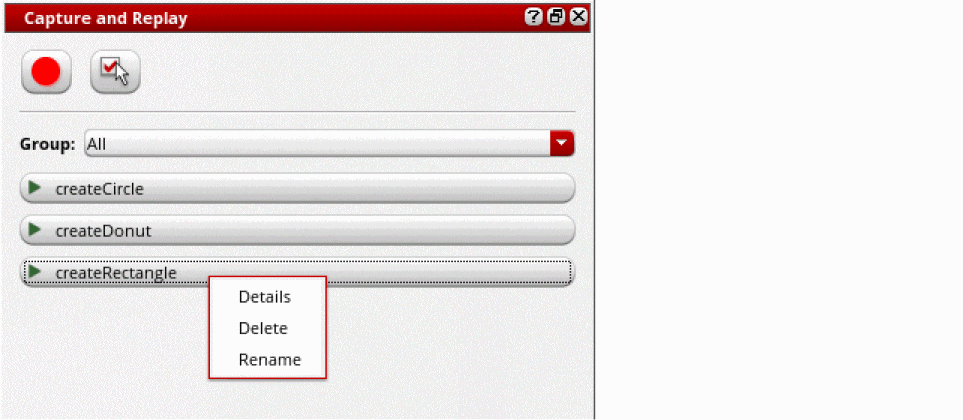

Deleting a Recording in the Capture and Replay Assistant
To delete a recording from the Capture and Replay assistant in Layout EXL or a higher tier:
-
In the Capture and Replay assistant, right click on the recording that you want to delete.
 - Select Delete from the shortcut menu.
-
Click Yes to confirm deletion.
The recording is removed from the list of recordings displayed in the assistant.
Related Topics
Capture and Replay Your Design Actions
Recording Your Actions in a Design
Replaying Your Recorded Actions in a Design
Return to top